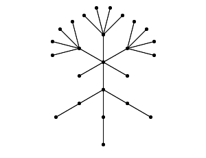
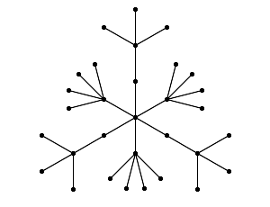

There are 0, 1, 1, 1, 2, 3, 6, 11, 23, 47, 106, 235, 551, 1301, 3159, 7741, 19320, 48629, 123867, 317955, 823065, 2144505, 5623756, 14828074, 39299897, 104636890, 279793450, 751065460, 2023443032, 5469566585, 14830871802, 40330829030, 109972410221, 300628862480, 823779631721, 2262366343746 trees on 0–35 vertices, respectively. This is Sequence A000055 in Sloane's On-Line Encyclopedia of Integer Sequences. (Except that he starts with 1, but there are no trees on 0 vertices: just like 1 is not a prime number but a product of zero primes, the empty graph is not connected, but a forest with zero trees.)
Only very few of all these trees have only integral eigenvalues. Examples are known of diameters 0–8 and 10. It is unknown whether integral trees of arbitrary diameter exist. (Added 2009: now Péter Csikvári has constructed integral trees with arbitrary even diameter, see below.)
There are many papers on integral trees, but I have not seen tables with a complete enumeration of all small integral trees. Here a table with all on at most 50 vertices.
Since the spectrum is symmetric around 0, it suffices to give the nonnegative half. Multiplicities are written as exponents.
The tree is given by a level sequence.
| # | n | d | name | tree | spectrum |
| 1 | 1 | 0 | K1 | 0 | 0 |
| 2 | 2 | 1 | K2 | 01 | 1 |
| 3 | 5 | 2 | K1,4 | 01111 | 2,03 |
| 4 | 6 | 3 | K1,2~K1,2 | 012211 | 2,1,02 |
| 5 | 7 | 4 | SK1,3 | 0121212 | 2,12,0 |
| 6 | 10 | 2 | K1,9 | 0111111111 | 3,08 |
| 7 | 14 | 3 | K1,6~K1,6 | 01222222111111 | 3,2,010 |
| 8 | 17 | 2 | K1,16 | 01111111111111111 | 4,015 |
| 9 | 17 | 4 | SK1,8 | 01212121212121212 | 3,17,0 |
| 10 | 17 | 4 | K1,7~SK1,4 | 01222222212121212 | 3,2,13,07 |
| 11 | 19 | 4 | K1,5~SK1,6 | 0122222121212121212 | 3,2,15,05 |
| 12 | 25 | 5 | T(2)*T(3,4)~T(3,1) | 0123333233332333322121212 | 3,23,13,011 |
| 13 | 26 | 2 | K1,25 | 01111111111111111111111111 | 5,024 |
| 14 | 26 | 4 | T(5,4) | 01222212222122221222212222 | 3,24,016 |
| 15 | 26 | 3 | K1,12~K1,12 | 01222222222222111111111111 | 4,3,022 |
| 16 | 31 | 4 | SK1,15 | 0121212121212121212121212121212 | 4,114,0 |
| 17 | 31 | 6 | T(1)*T(2,4)*T(1,1,3)*T(2,3,1) | 0123331232323123232312222122221 | 3,24,15,011 |
| 18 | 31 | 6 | T(3,4)*T(3,1,3) | 0123331233312333122221222212222 | 3,25,1,017 |
| 19 | 35 | 4 | K1,13~SK1,10 | 01222222222222212121212121212121212 | 4,3,19,013 |
| 20 | 37 | 2 | K1,36 | 0111111111111111111111111111111111111 | 6,035 |
| 21 | 37 | 4 | K1,11~SK1,12 | 0122222222222121212121212121212121212 | 4,3,111,011 |
| 22 | 37 | 6 | T(1,5,3,1) | 0123232312323231232323123232312323231 | 3,24,111,05 |
| 23 | 37 | 6 | T(1,4)*T(2,1,3)*T(3,3,1) | 0123331233312323231232323123232312222 | 3,25,17,011 |
| 24 | 42 | 3 | K1,20~K1,20 | 0 1 220 120 | 5,4,038 |
| 25 | 46 | 4 | T(6,4)*T(1,14) | 0 1 214 (12222)6 | 4,3,25,032 |
| 26 | 49 | 4 | SK1,24 | 0 (12)24 | 5,123,0 |
| 27 | 50 | 2 | K1,49 | 0 149 | 7,048 |
| 28 | 50 | 4 | T(4)*T(9,4) | 0 (12222)9 14 | 4,28,1,030 |
Symbols used in the graph name:
Km is the complete graph on m vertices.
K1,m is the star on m+1 vertices. (It has an obvious center.)
SX is the subdivision of X. (It has the same center as X, if any.)
G~H is the result of joining the center of G with the center of H by an edge. (Here `center' is defined by induction. The result does not have a center.)
C(G1,...) is the cone over G1,..., that is, the result of joining a new vertex to the center of each of the Gi. (The new vertex is the center.) For example, K1,m is C(mK1), and SK1,m is C(mK2).
T(nk,...,n1) is defined by induction on k as the graph C(nkT(nk-1,...,n1)), where T() is a single vertex. For example, K1,m is T(m), and SK1,m is T(m,1).
G*H is the graph obtained from the disjoint union of G and H by identifying the centers of G and H. For example, C(mK1,t+sK1) is T(s)*T(m,t).
√m, 0m–1, –√m.It follows that K1,m is integral when m is a square (Harary & Schwenk (1974)). This covers #1, 2, 3, 6, 8, 13, 20, 27 (since #1 is K1,0 and #2 is K1,1). (Harary & Schwenk also gave the three examples #4, 5, 7.)
√(m+1), 1m–1, 0, (–1)m–1, –√(m+1).It follows that SK1,m is integral iff m+1 is a square. This covers #5, 9, 16, 26.
Watanabe & Schwenk (1979) showed that these graphs are the only integral trees with a single vertex of degree more than two.
They also studied the situation with two adjacent vertices of degree more than two, and proved that in that situation one has either K1,m~K1,r or K1,m~SK1,r. (They were unable to handle the case of two nonadjacent vertices of degree more than two, but using interlacing and Godsil's Lemma it is not difficult to see that that does not yield any further examples - see Brouwer (2009).)
x4 – (m+r+1)x2 + mrhas only integral roots. (The spectrum consists of 0m+r–2 together with these four roots.) This covers #4, 7, 15, 24 (with m = r = 2, 6, 12, 20). The next smallest case is m = r = 30 on 62 vertices. Examples where this equation has integral roots only are the cases with m = r = a(a+1) for some integer a. Now the positive roots are a and a+1. But there are also other solutions - the smallest is K1,50~K1,98 on 150 vertices. The question which m and r give integral solutions was settled by Graham (1980).
x4 – (m+r+2)x2 + mr + m + 1has only integral roots. (The spectrum consists of (–1)r–1, 0m, 1r–1 together with these four roots.) This covers #10, 11, 19, 21 (with (m,r) = (7,4), (5,6), (13,10), (11,12)). The next smallest cases are (m,r) = (21,18), (19,20) on 59 and 61 vertices, respectively. The m and r that give integral solutions can be found by the method of Graham (1980). See also below.
x4 – (m+t+s+1)x2 + st + rhas only integral roots, and t is a square, and either q=1 or r is a square. (The positive spectrum consists of 0 with multiplicity m(t–1)+q(r–1)+s, and √t with multiplicity m, and √r with multiplicity q–1, and the two positive roots of the above polynomial.)
The graph T(2)*T(3,4)~T(3,1) on 25 vertices was given by Wang (2005), p. 58. This is #12. It is the smallest integral tree of diameter 5.

The next smallest case is T(7)*T(3,9)~T(8,1) on 55 vertices.
The graph T(3,4)*T(3,1,3) on 31 vertices was given by Ligong Wang (2005), p. 68. This is #18.

Graphs #17, 18 are the smallest integral trees of diameter 6.
The graph T(1,5,3,1) on 37 vertices is due to Yao (2001) (cf. Wang (2005), p. 47). This is #22.
Graph #23 is perhaps given here for the first time. It is T(1,4)*T(2,1,3)*T(3,3,1).

The graph T(6,4)*T(1,14) on 46 vertices may be due to Yuan (1998). This is #25.
The graph T(4)*T(9,4) on 50 vertices was given by Watanabe (1979). This is #28.
| n | d | name | tree | spectrum | reference |
| 55 | 5 | T(7)*T(3,9)~T(8,1) | 01(239)327(12)8 | 4,33,2,17,031 | Wang (2005), p. 57 |
| 56 | 6 | T(3)*T(8,4)*T(1,1,3)*T(1,3,1) | 0111(12222)8123331232323 | 4,29,13,030 | aeb |
| 59 | 4 | K1,21~SK1,18 | 01221(12)18 | 5,4,117,021 | WS |
| 59 | 6 | T(1)*T(4,4)*T(2,1,3)*T(1,13,1) | 01(12222)4(12333)21(23)13 | 4,3,25,113,019 | VC |
| 59 | 6 | T(2)*T(3,4)*T(2,3,1)*T(1,13,1) | 012(12222)3(1232323)21(23)13 | 4,3,24,117,013 | VC |
| 61 | 4 | K1,19~SK1,20 | 01219(12)20 | 5,4,119,019 | WS |
| 61 | 4 | T(12,4) | 0(12222)12 | 4,211,037 | WS |
| 62 | 3 | K1,30~K1,30 | 01230130 | 6,5,058 | WS |
| 62 | 4 | T(10,4)*T(1,10) | 01210(12222)10 | 4,3,29,040 | Yuan (1998)? |
| 62 | 6 | T(3)*T(6,4)*T(4,3,1) | 0111(12222)6(1232323)4 | 4,29,19,024 | Wang (2005), p. 76 |
| 62 | 6 | T(2)*T(7,4)*T(2,1,3)*T(2,3,1) | 011(12222)7(12333)2(1232323)2 | 4,210,15,030 | aeb |
| 62 | 6 | T(1)*T(8,4)*T(4,1,3) | 01(12222)8(12333)4 | 4,211,1,036 | Wang (2005), p. 77 |
| 65 | 2 | K1,64 | 0164 | 8,063 | WS |
| 65 | 6 | T(1)*T(2,4)*T(1,1,3)*T(3,3,1)*T(1,13,1) | 01(12222)2(12333)(1232323)31(23)13 | 4,3,25,119,013 | VC |
| 65 | 6 | T(3,4)*T(3,1,3)*T(1,3,1)*T(1,13,1) | 0(12222)3(12333)3(1232323)1(23)13 | 4,3,26,115,019 | VC |
| 67 | 6 | T(2)*T(7,4)*T(2,1,3)*T(1,9,1) | 012(12222)7(12333)21(23)9 | 4,3,28,19,029 | VC |
| 67 | 6 | T(3)*T(6,4)*T(2,3,1)*T(1,9,1) | 013(12222)6(1232323)21(23)9 | 4,3,27,113,023 | VC |
| 68 | 6 | T(2)*T(5,4)*T(1,1,3)*T(5,3,1) | 011(12222)5(12333)(1232323)5 | 4,210,111,024 | aeb |
| 68 | 6 | T(1)*T(6,4)*T(3,1,3)*T(3,3,1) | 01(12222)6(12333)3(1232323)3 | 4,211,17,030 | aeb |
| 68 | 6 | T(7,4)*T(5,1,3)*T(1,3,1) | 0(12222)7(12333)5(1232323) | 4,212,13,036 | aeb |
| 71 | 4 | SK1,35 | 0(12)35 | 6,134,0 | WS |
| 71 | 4 | T(7,9) | 0(129)7 | 4,36,057 | WS |
| 71 | 6 | T(6)*T(2,9)*T(2,8,1)*T(1,1,8) | 016(129)2(1(23)8)21238 | 4,34,2,114,031 | aeb |
| 71 | 6 | T(1)*T(6,3,1)*T(1,13,1) | 01(1232323)61(23)13 | 4,3,25,125,07 | VC |
| 71 | 6 | T(1,4)*T(2,1,3)*T(4,3,1)*T(1,13,1) | 0(12222)(12333)2(1232323)41(23)13 | 4,3,26,121,013 | VC |
| 73 | 6 | T(2)*T(5,4)*T(1,1,3)*T(3,3,1)*T(1,9,1) | 012(12222)5(12333)(1232323)31(23)9 | 4,3,28,115,023 | VC |
| 73 | 6 | T(1)*T(6,4)*T(3,1,3)*T(1,3,1)*T(1,9,1) | 01(12222)6(12333)3(1232323)1(23)9 | 4,3,29,111,029 | VC |
| 74 | 6 | T(2)*T(3,4)*T(8,3,1) | 011(12222)3(1232323)8 | 4,210,117,018 | Wang (2005), p. 76 |
| 74 | 6 | T(1)*T(4,4)*T(2,1,3)*T(6,3,1) | 01(12222)4(12333)2(1232323)6 | 4,211,113,024 | aeb |
| 74 | 6 | T(5,4)*T(4,1,3)*T(4,3,1) | 0(12222)5(12333)4(1232323)4 | 4,212,19,030 | aeb |
| 78 | 4 | K1,18~K1,25~K1,32 | 012512181232 | 6,5,4,072 | Wang (2005), 3.1.14 |
| 79 | 6 | T(2)*T(3,4)*T(6,3,1)*T(1,9,1) | 012(12222)3(1232323)61(23)9 | 4,3,28,121,017 | VC |
| 79 | 6 | T(1)*T(4,4)*T(2,1,3)*T(4,3,1)*T(1,9,1) | 01(12222)4(12333)2(1232323)41(23)9 | 4,3,29,117,023 | VC |
| 79 | 6 | T(5,4)*T(4,1,3)*T(2,3,1)*T(1,9,1) | 0(12222)5(12333)4(1232323)21(23)9 | 4,3,210,113,029 | VC |
| 80 | 6 | T(1)*T(2,4)*T(1,1,3)*T(9,3,1) | 01(12222)2(12333)(1232323)9 | 4,211,119,018 | aeb |
| 80 | 6 | T(3,4)*T(3,1,3)*T(7,3,1) | 0(12222)3(12333)3(1232323)7 | 4,212,115,024 | aeb |
| 81 | 6 | T(6,9)*T(2,1,8) | 0(1238)2(129)6 | 4,37,1,063 | Wang (2005), p. 68 |
| 82 | 2 | K1,81 | 0181 | 9,080 | WS |
| 85 | 6 | T(3,4)*T(3,1,3)*T(5,3,1)*T(1,9,1) | 0(12222)3(12333)3(1232323)51(23)9 | 4,3,210,119,023 | VC |
| 86 | 3 | K1,42~K1,42 | 01242142 | 7,6,082 | WS |
| 86 | 6 | T(1,12,3,1) | 01(2343434)12 | 4,211,125,012 | Yao (2001)? |
| 86 | 6 | T(1,4)*T(2,1,3)*T(10,3,1) | 012222(12333)2(1232323)10 | 4,212,121,018 | aeb |
| 87 | 6 | T(5)*T(1,9)*T(3,8,1)*T(2,1,8) | 015129(1(23)8)3(1238)2 | 4,35,2,121,031 | aeb |
| 89 | 4 | K1,31~SK1,28 | 01231(12)28 | 6,5,127,031 | WS |
| 89 | 5 | T(6)*T(15,4)*T(1,3,1) | 016(12222)151232323 | 5,215,13,051 | Wang (2005), Cor 4.1.4(3) |
| 91 | 4 | K1,29~SK1,30 | 01229(12)30 | 6,5,129,029 | WS |
| 91 | 6 | T(4)*T(3,9)*T(1,5,4)*T(3,1,8) | 014(129)31(234)5(1238)3 | 4,36,25,067 | aeb |
| 91 | 6 | T(1)*T(10,3,1)*T(1,9,1) | 01(1232323)101(23)9 | 4,3,29,129,011 | VC |
| 91 | 6 | T(1,4)*T(2,1,3)*T(8,3,1)*T(1,9,1) | 0(12222)(12333)2(1232323)81(23)9 | 4,3,210,125,017 | VC |
| 94 | 4 | T(14,4)*T(1,22) | 01222(12222)14 | 5,4,213,064 | Yuan (1998)? |
| 95 | 6 | T(5)*T(14,4)*T(1,1,3)*T(2,3,1) | 015(12222)14(12333)(1232323)2 | 5,216,15,051 | aeb |
| 95 | 6 | T(4)*T(15,4)*T(3,1,3) | 014(12222)15(12333)3 | 5,217,1,057 | Wang (2005), p. 77 |
| 97 | 4 | SK1,48 | 0(12)48 | 7,147,0 | WS |
| 98 | 8 | T(3,1)*T(4,9)*C(3C(K1+T(7,1))) | 0(12)3(129)4(122(34)7)3 | 4,36,2,123,036 | aeb |
The above example on 98 vertices is the smallest integral tree known of diameter 8.
Some version of the above two tables was published in Brouwer (2008).
Let K1,m1~K1,m2~ ... ~K1,mt denote a path with t vertices and mi pending edges at the i-th vertex. Aart Blokhuis remarks that for t=3 and eigenvalues a–1,a,a+1 one gets Pell's equation u2–2v2 = –1 with smallest solutions (m1,m2,m3) = (18,25,32) and (800,841,882).
It follows that if G is a tree with designated vertex x, and H a tree with designated vertex y, and a tree T = G~mH is constructed by taking G and m copies of H, where x is joined to the m copies of y, then φT = φHm–1(φGφH – mφG\xφH\y). By symmetry, if T is integral, and G is integral, then also the result H~mG of taking H and attaching m copies of G is integral.
For example, suppose that T(p,q,r,...) is integral, where p > 1. Then also H = T(q,r,...) is integral and we can apply this with G = K1 to conclude that C(pK1+qT(r,...)) is integral (and much smaller). (For example, the integrality of T(4,9,4) of diameter 6 on 185 vertices is equivalent to that of Watanabe's graph C(9K1,4+4K1) of diameter 4 on 50 vertices. And the integrality of T(5,4) of diameter 4 on 26 vertices is equivalent to that of K1,9 of diameter 2 on 10 vertices.)
This also immediately gives the integrality of Csikvári's trees (see below).
∑ t2 = n–1,
∑ t4 = ∑ dx2 – (n–1),
∑ t6 = ∑ dx3 – 3 ∑ dx2 + 2(n–1) + 3 ∑ dxdywhere dx is the degree of the vertex x (so that ∑ dx = 2(n–1)), and the last sum is over unordered edges e = xy.
Proof Suppose T is a tree with a complete matching. Then that matching is unique, since the union of two distinct complete matchings contains a cycle. Now the constant term of the characteristic polynomial is, up to sign, the number of complete matchings. It is also the product of all eigenvalues. If this constant term is 1 or –1 and the tree is integral, then all eigenvalues are 1 or –1 and the path of length 2 is not an induced subgraph, so we have K2. ∎
This argument can be extended a little.
Theorem (AEB) If an integral tree has 0 as eigenvalue with multiplicity 1, then the tree is SK1,m.
Proof Suppose T is a tree on n vertices with eigenvalue 0 of multiplicity 1. Then it has almost matchings: coverings by m pairwise disjoint edges and a single point, where n = 2m+1. The number of such almost matchings is, up to sign, the product of the nonzero eigenvalues. On the other hand, the number of such almost matchings is precisely the number of nonzero entries of the unique eigenvector u for 0. (If we delete a vertex where u is zero, then the resulting graph has eigenvalue 0 and hence no matchings. Suppose that u is nonzero at p, and the graph T\p has no matching. Then it has eigenvalue 0, and since n–1=2m is even, this eigenvalue has multiplicity at least 2, so there is an eigenvector v of T\p for 0 that sums to 0 on the neighbours of p. But then v extended by a 0 on p is another eigenvector for 0 of T, contradiction.) This number of nonzero entries is at most (n+1)/2 = m+1, since the nonzero entries form a coclique, and no vertex with zero entry is adjacent to more than two vertices with nonzero entries.
This shows that ∑ t2 = 2m (from the trace of A2) and ∏ t2 ≤ m+1 (from the above), where sum and product are over the positive eigenvalues t. Since T is integral these t are all at least 1, and the extremal situation is when all except one are 1 and the last one has t2 = m+1. Since equality holds we must be in this extremal situation and know the spectrum, it is that of SK1,m.
Now A2–I has rank 3 (eigenvalue m with multiplicity 2 and –1 with multiplicity 1) and hence has rank 1 on one bipartite half of T. The Perron-Frobenius eigenvector is positive everywhere, so yields an eigenvector of A2–I for both components, with eigenvalue m. The vector u vanishes on one bipartite half. That bipartite half is connected for steps of size 2, and has a rank 1 matrix, so has diameter 2, where each vertex has a unique path of length 2 to every other vertex, and has degree 2 itself. This forces the structure, and T must be SK1,m. ∎
Remark The trees SK1,m are determined by their spectrum as trees, not as graphs. For example, SK1,3 is cospectral with C6+K1.
Theorem (AEB & WHH) There are 11 integral trees with largest eigenvalue 3 (on 10, 14, 17, 17, 19, 25, 26, 31, 31, 37, 37 vertices, respectively). These trees have already been described above.
Apply this argument to the characteristic equations of K1,m~K1,r and K1,m~SK1,r The unknown eigenvalues a, –a, b, –b satisfy a2+b2 = m+r+1 and a2b2 = mr in the first case, and a2+b2 = m+r+2 and a2b2 = mr + m + 1 in the second case.
With A = b–a and B = b+a these are equivalent to m,r = (A2+B2–2±2C)/4 where C2 = (A2–1)(B2–1) in the first case, and to m–1,r = (A2+B2–6±2C)/4 where C2–4 = (A2–1)(B2–1) in the second case.
By Graham descent we arrive after a number of steps at a solution with A ≤ 1. Now A = 0 does not give solutions with positive m,r, and A = 1 leads to B = 2a+1 and C = 0 and m,r = a(a+1) in the first case, and to B = 2a+1 and C = 2 and {m–1,r} = {a(a+1),a(a+1)–2}, that is, (m,r) = (a(a+1)+1,a(a+1)–2) or (a(a+1)–1,a(a+1)) in the second case.
For the first case Graham (1980) gives an explicit expression of A,B,C in terms of Chebyshev polynomials.
Integrality of these trees can also be seen using the above remark on characteristic polynomials. It implies that if T'(a+b,c,d,...) and T'(b,c,d,...) and T'(c,d,...) are integral, then also T'(a,b,c,d,...) is.
The trees T'(r,m) are the same as T(r,m). The trees T'(5,3,1) and T'(12,3,1) are the same as the trees T(1,5,3,1) and T(1,12,3,1) seen above. More generally, the trees T'(r,m,t) are the same as the trees T(t)*T(r,m,t) studied by Wang & Li (2000).
This yields integral trees of arbitrary even diameter. For example, an integral tree of diameter 12 on 27007 vertices.
A. E. Brouwer & W. H. Haemers, The integral trees with spectral radius 3, Lin. Alg. Appl. 429 (2008) 2710–2718. pdf
A. E. Brouwer, Integral trees homeomorphic to a double star, preprint, Sept. 2009. pdf
Viola Campos, Integral trees of the form T(a)·T(c,4)·T(d,1,3)·T(e,3,1)·T(1,f,1), preprint, Jan 2022.
Péter Csikvári, Integral trees of arbitrarily large diameters, preprint, Sept. 2009.
R. L. Graham, On a Diophantine Equation Arising in Graph Theory, Europ. J. Comb. 1 (1980) 107–112. pdf
F. Harary & A. J. Schwenk, Which graphs have integral spectra? pp. 45–51 in: Graphs and Combinatorics, Lecture Notes in Mathematics 406, Springer-Verlag, Berlin, 1974.
Pavel Híc & Roman Nedela, Balanced integral trees, Math. Slovaca 48 (1998), no.5, 429–445.
Pavel Híc & Milan Pokorný, On integral balanced rooted trees of diameter 10, Acta Univ. M. Belii Math no. 10 (2003) 9–15. pdf
Pavel Híc & Milan Pokorný, There are integral trees of diameter 7, Univ. Beograd. Publ. Elektrotehn. Fak. Ser. Mat. 18 (2006) 59–63. pdf
Ligong Wang, Integral Trees and Integral Graphs, Ph.D. Thesis, Univ. of Twente, 2005. pdf
Ligong Wang & Xueliang Li, Some new classes of integral trees with diameters 4 and 6, Australasian J. Comb. 21 (2000) 237–243. pdf
Ligong Wang, Xueliang Li & Shenggui Zhang, Families of integral trees with diameters 4, 6, and 8, Discrete Applied Mathematics 136 (2004) 349–362. pdf
Mamoru Watanabe, Note on integral trees, Math. Rep. Toyama Univ. 2 (1979) 95–100.
Mamoru Watanabe & Allen J. Schwenk, Integral starlike trees, J. Austral. Math. Soc. (A) 28 (1979) 120–128.
Xiangyuan Yao, Integral trees and integral digraphs (Chinese), MSc. Thesis, Northwestern Polytechnical University, China, 2001.
Pingzhi Yuan, Integral trees of diameter 4 (Chinese), J. Systems Sci. Math. Sci. 18 (1998) 177–181.
Send corrections and additions to aeb@cwi.nl